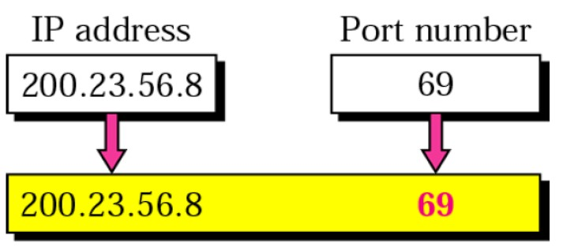

2.Port Number
A port number helps your computer identify which app or service should handle the data coming in or going out.
Example:
We browsing uses Port 80 (HTTP).
Secure websites use Port 443 (HTTPS).

2.Works with IP Address
The IP address finds the device, and the port number finds the specific service or app on that device.
Example:
Your house address = IP address
Room number = Port number
3. 16-Bit Number
Port numbers are 16 bits long, which means they are stored using 16 ones and zeros in computer language.
4. Unsigned Number
“Unsigned” means no negative numbers are allowed — only positive numbers.
5. Range of Port Numbers
Since it’s 16-bit, there are 65,536 possible ports, numbered from 0 to 65,535.
6. Common Port Numbers,
Some ports are reserved for popular services, like:
80 → HTTP (Websites)
443 → HTTPS (Secure websites)
25 → Email (SMTP)
21 → FTP (File Transfer)
The Practical Format: The Three Categories
To prevent chaos, the internet authorities (IANA) have divided the 65,536 available ports into three categories. This is the most practical format for you as a developer to understand.
Well-Known Ports (0 - 1023)
1.Reserved Ports: Used for important and common internet services.
2.Managed By IANA: Strictly controlled to keep them secure.
3.Admin Access Needed: You need admin or root permission to use these ports.
Examples:
21 → FTP (File Transfer)
22 → SSH (Secure Login)
25 → SMTP (Send Email)
53 → DNS (Domain Name System)
80 → HTTP (Web Traffic)
443 → HTTPS (Secure Web Traffic)
Registered Ports (1024 - 49151)
1.Purpose: Used by specific apps or services that are not as universal as well-known ports.
2.Registration: Developers can register a port with IANA to avoid conflicts.
3.No Admin Needed: You don’t need admin permissions to run apps on these ports.
Examples (For MERN Developers):
1.Temporary Use: These ports are used only for short-term connections.
2.No Control: Not managed by IANA — anyone can use them.
3Used by Clients: When your browser or app connects to a server, your computer automatically picks a random port from this range.
4. Example:
You visit google.com on port 443 (HTTPS).
Your computer might use port 50231 as its temporary source port.
5.Key Rule:
Servers never listen on these ports — they are for client-side communication only.